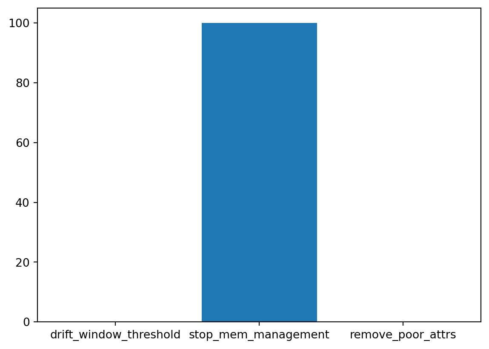
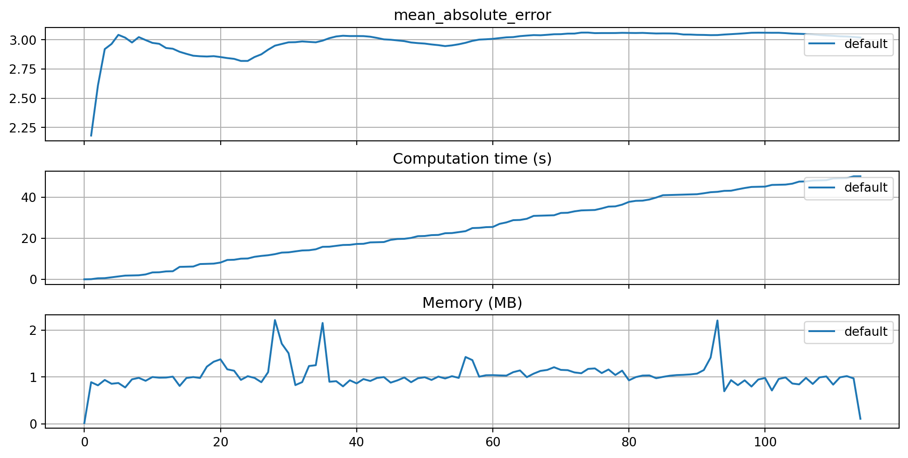
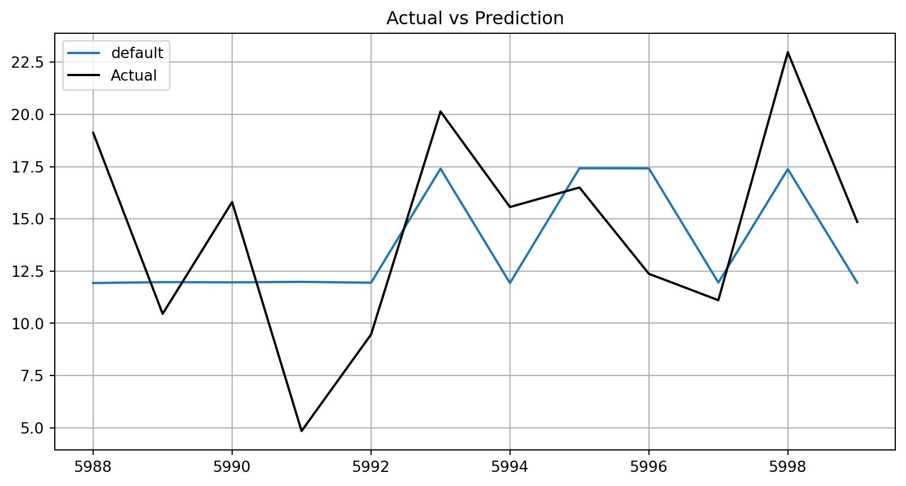
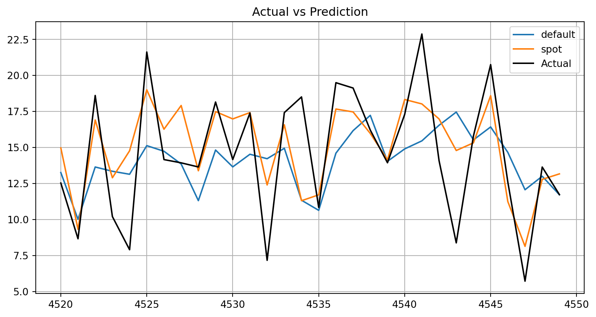
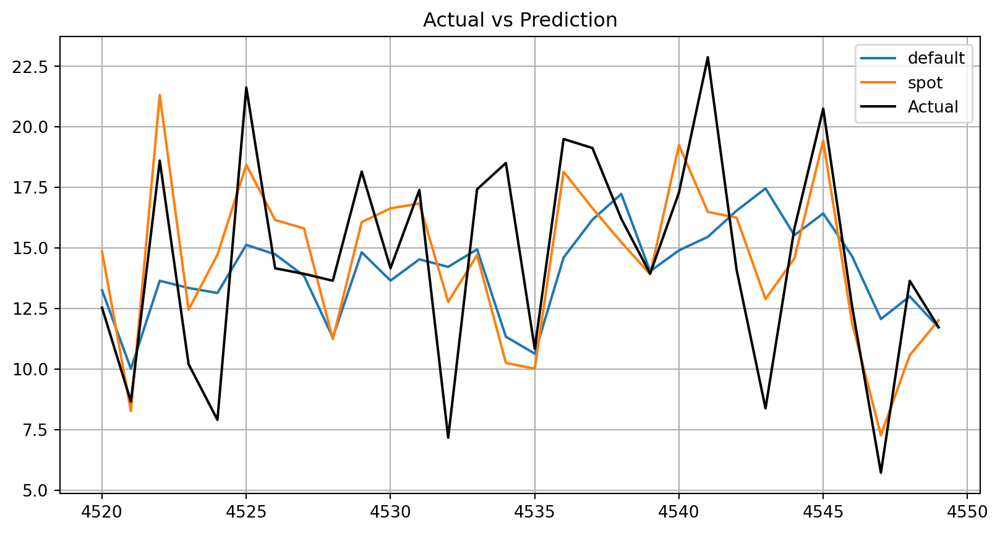
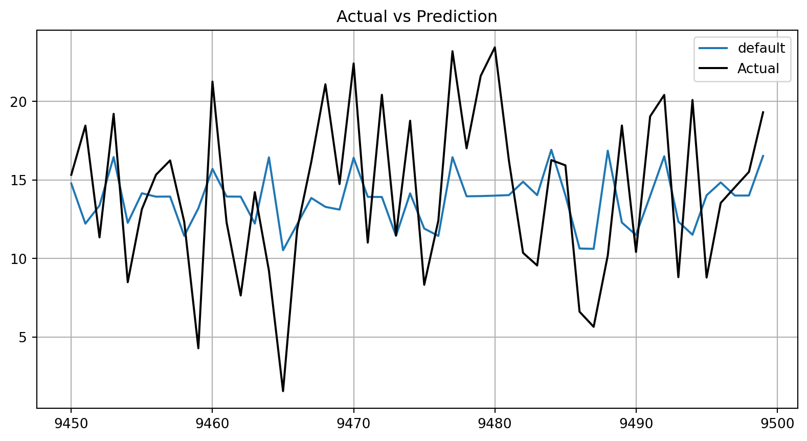
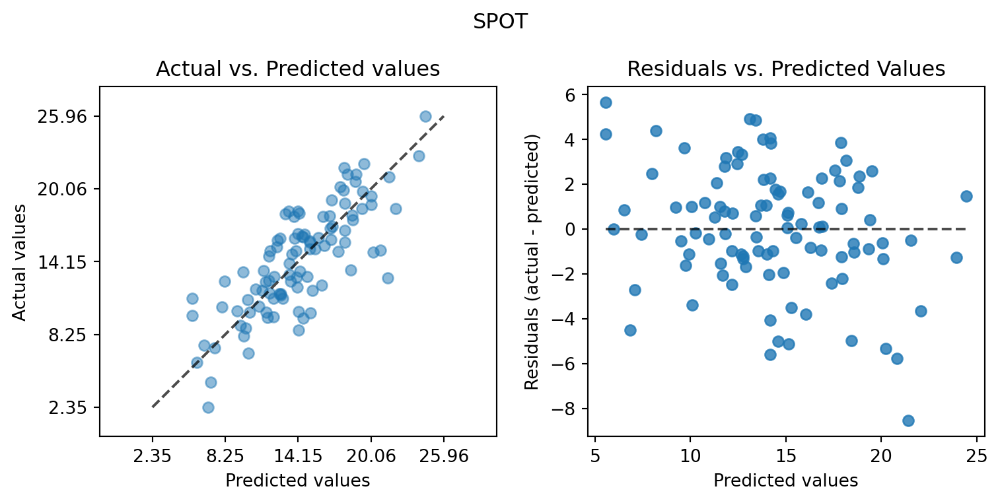
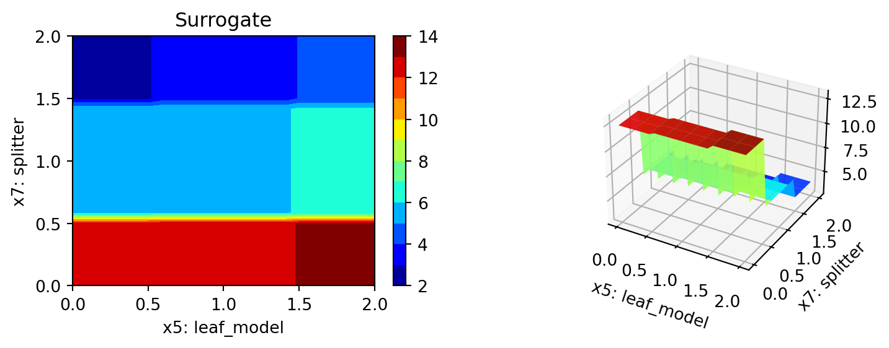
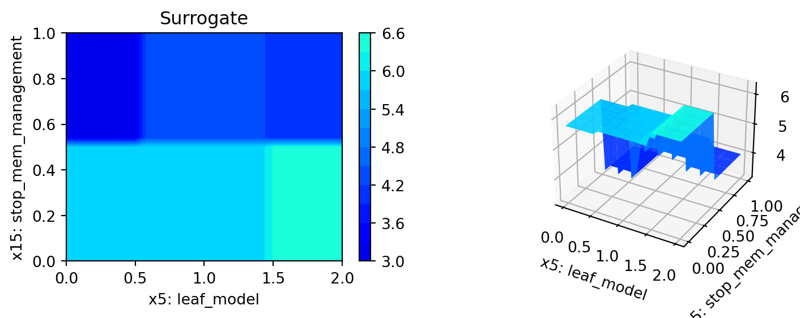
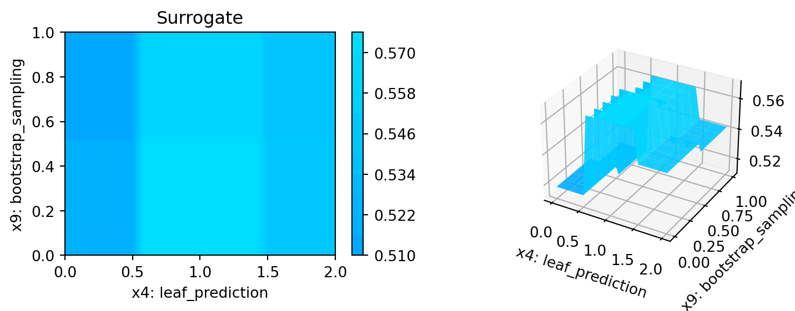

MAX_TIME = 1
INIT_SIZE = 5
K = .113 HPT: River
River is a Python library for online machine learning (Montiel et al. 2021). It aims to be the most user-friendly library for doing machine learning on streaming data. River is the result of a merger between creme and scikit-multiflow.
13.1 Step 1: Setup
Before we consider the detailed experimental setup, we select the parameters that affect run time, initial design size and the device that is used.
Caution: Run time and initial design size should be increased for real experiments
- MAX_TIME is set to one minute for demonstration purposes. For real experiments, this should be increased to at least 1 hour.
- INIT_SIZE is set to 5 for demonstration purposes. For real experiments, this should be increased to at least 10.
- K is set to 0.1 for demonstration purposes. For real experiments, this should be increased to at least 1.
10-river_maans03_1min_5init_2023-07-03_11-35-3413.1.1 river Hyperparameter Tuning: HATR with Friedman Drift Data
- This notebook exemplifies hyperparameter tuning with SPOT (spotPython and spotRiver).
- The hyperparameter software SPOT was developed in R (statistical programming language), see Open Access book “Hyperparameter Tuning for Machine and Deep Learning with R - A Practical Guide”, available here: https://link.springer.com/book/10.1007/978-981-19-5170-1.
- This notebook demonstrates hyperparameter tuning for
river. It is based on the notebook “Incremental decision trees in river: the Hoeffding Tree case”, see: https://riverml.xyz/0.15.0/recipes/on-hoeffding-trees/#42-regression-tree-splitters. - Here we will use the river
HTRandHATRfunctions as in “Incremental decision trees in river: the Hoeffding Tree case”, see: https://riverml.xyz/0.15.0/recipes/on-hoeffding-trees/#42-regression-tree-splitters.
pip list | grep "spot[RiverPython]"spotPython 0.2.52
spotRiver 0.0.94Note: you may need to restart the kernel to use updated packages.# import sys
# !{sys.executable} -m pip install --upgrade build
# !{sys.executable} -m pip install --upgrade --force-reinstall spotPython13.2 Step 2: Initialization of the fun_control Dictionary
from spotPython.utils.init import fun_control_init
fun_control = fun_control_init(task="regression",
tensorboard_path=None)13.3 Step 3: Load the Friedman Drift Data
horizon = 7*24
k = K
n_total = int(k*100_000)
n_samples = n_total
p_1 = int(k*25_000)
p_2 = int(k*50_000)
position=(p_1, p_2)
n_train = 1_000
a = n_train + p_1 - 12
b = a + 12- Since we also need a
riverversion of the data below for plotting the model, the corresponding data set is generated here. Note:spotRiveruses thetrainandtestdata sets, whileriveruses theXandydata sets
from river.datasets import synth
import pandas as pd
dataset = synth.FriedmanDrift(
drift_type='gra',
position=position,
seed=123
)
data_dict = {key: [] for key in list(dataset.take(1))[0][0].keys()}
data_dict["y"] = []
for x, y in dataset.take(n_total):
for key, value in x.items():
data_dict[key].append(value)
data_dict["y"].append(y)
df = pd.DataFrame(data_dict)
# Add column names x1 until x10 to the first 10 columns of the dataframe and the column name y to the last column
df.columns = [f"x{i}" for i in range(1, 11)] + ["y"]
train = df[:n_train]
test = df[n_train:]
target_column = "y"
#
fun_control.update({"data": None, # dataset,
"train": train,
"test": test,
"n_samples": n_samples,
"target_column": target_column})13.4 Step 4: Specification of the Preprocessing Model
from river import preprocessing
prep_model = preprocessing.StandardScaler()
fun_control.update({"prep_model": prep_model})13.5 Step 5: Select algorithm and core_model_hyper_dict
- The
rivermodel (HATR) is selected. - Furthermore, the corresponding hyperparameters, see: https://riverml.xyz/0.15.0/api/tree/HoeffdingTreeRegressor/ are selected (incl. type information, names, and bounds).
- The corresponding hyperparameter dictionary is added to the
fun_controldictionary. - Alternatively, you can load a local hyper_dict. Simply set
river_hyper_dict.jsonas the filename. Iffilenameis set toNone, the hyper_dict is loaded from thespotRiverpackage.
from river.tree import HoeffdingAdaptiveTreeRegressor
from spotRiver.data.river_hyper_dict import RiverHyperDict
from spotPython.hyperparameters.values import add_core_model_to_fun_control
core_model = HoeffdingAdaptiveTreeRegressor
fun_control = add_core_model_to_fun_control(core_model=core_model,
fun_control=fun_control,
hyper_dict=RiverHyperDict,
filename=None)The corresponding entries for the core_model class are shown below.
fun_control['core_model_hyper_dict']{'grace_period': {'type': 'int',
'default': 200,
'transform': 'None',
'lower': 10,
'upper': 1000},
'max_depth': {'type': 'int',
'default': 20,
'transform': 'transform_power_2_int',
'lower': 2,
'upper': 20},
'delta': {'type': 'float',
'default': 1e-07,
'transform': 'None',
'lower': 1e-08,
'upper': 1e-06},
'tau': {'type': 'float',
'default': 0.05,
'transform': 'None',
'lower': 0.01,
'upper': 0.1},
'leaf_prediction': {'levels': ['mean', 'model', 'adaptive'],
'type': 'factor',
'default': 'mean',
'transform': 'None',
'core_model_parameter_type': 'str',
'lower': 0,
'upper': 2},
'leaf_model': {'levels': ['LinearRegression', 'PARegressor', 'Perceptron'],
'type': 'factor',
'default': 'LinearRegression',
'transform': 'None',
'class_name': 'river.linear_model',
'core_model_parameter_type': 'instance()',
'lower': 0,
'upper': 2},
'model_selector_decay': {'type': 'float',
'default': 0.95,
'transform': 'None',
'lower': 0.9,
'upper': 0.99},
'splitter': {'levels': ['EBSTSplitter', 'TEBSTSplitter', 'QOSplitter'],
'type': 'factor',
'default': 'EBSTSplitter',
'transform': 'None',
'class_name': 'river.tree.splitter',
'core_model_parameter_type': 'instance()',
'lower': 0,
'upper': 2},
'min_samples_split': {'type': 'int',
'default': 5,
'transform': 'None',
'lower': 2,
'upper': 10},
'bootstrap_sampling': {'levels': [0, 1],
'type': 'factor',
'default': 0,
'transform': 'None',
'core_model_parameter_type': 'bool',
'lower': 0,
'upper': 1},
'drift_window_threshold': {'type': 'int',
'default': 300,
'transform': 'None',
'lower': 100,
'upper': 500},
'switch_significance': {'type': 'float',
'default': 0.05,
'transform': 'None',
'lower': 0.01,
'upper': 0.1},
'binary_split': {'levels': [0, 1],
'type': 'factor',
'default': 0,
'transform': 'None',
'core_model_parameter_type': 'bool',
'lower': 0,
'upper': 1},
'max_size': {'type': 'float',
'default': 500.0,
'transform': 'None',
'lower': 100.0,
'upper': 1000.0},
'memory_estimate_period': {'type': 'int',
'default': 1000000,
'transform': 'None',
'lower': 100000,
'upper': 1000000},
'stop_mem_management': {'levels': [0, 1],
'type': 'factor',
'default': 0,
'transform': 'None',
'core_model_parameter_type': 'bool',
'lower': 0,
'upper': 1},
'remove_poor_attrs': {'levels': [0, 1],
'type': 'factor',
'default': 0,
'transform': 'None',
'core_model_parameter_type': 'bool',
'lower': 0,
'upper': 1},
'merit_preprune': {'levels': [0, 1],
'type': 'factor',
'default': 0,
'transform': 'None',
'core_model_parameter_type': 'bool',
'lower': 0,
'upper': 1}}13.6 Step 6: Modify hyper_dict Hyperparameters for the Selected Algorithm aka core_model
13.6.1 Modify hyperparameter of type factor
# fun_control = modify_hyper_parameter_levels(fun_control, "leaf_model", ["LinearRegression"])
# fun_control["core_model_hyper_dict"]13.6.2 Modify hyperparameter of type numeric and integer (boolean)
from spotPython.hyperparameters.values import modify_hyper_parameter_bounds
fun_control = modify_hyper_parameter_bounds(fun_control, "delta", bounds=[1e-10, 1e-6])
# fun_control = modify_hyper_parameter_bounds(fun_control, "min_samples_split", bounds=[3, 20])
fun_control = modify_hyper_parameter_bounds(fun_control, "merit_preprune", [0, 0])13.7 Step 7: Selection of the Objective (Loss) Function
There are three metrics:
1. `metric_river` is used for the river based evaluation via `eval_oml_iter_progressive`.
2. `metric_sklearn` is used for the sklearn based evaluation via `eval_oml_horizon`.
3. `metric_torch` is used for the pytorch based evaluation.import numpy as np
from river import metrics
from sklearn.metrics import mean_absolute_error
from spotRiver.fun.hyperriver import HyperRiver
fun = HyperRiver(seed=123, log_level=50).fun_oml_horizon
weights = np.array([1, 1/1000, 1/1000])*10_000.0
horizon = 7*24
oml_grace_period = 2
step = 100
weight_coeff = 1.0
fun_control.update({
"horizon": horizon,
"oml_grace_period": oml_grace_period,
"weights": weights,
"step": step,
"log_level": 50,
"weight_coeff": weight_coeff,
"metric_river": metrics.MAE(),
"metric_sklearn": mean_absolute_error
})13.8 Step 8: Calling the SPOT Function
13.8.1 Prepare the SPOT Parameters
- Get types and variable names as well as lower and upper bounds for the hyperparameters.
from spotPython.hyperparameters.values import (
get_var_type,
get_var_name,
get_bound_values
)
var_type = get_var_type(fun_control)
var_name = get_var_name(fun_control)
fun_control.update({"var_type": var_type,
"var_name": var_name})
lower = get_bound_values(fun_control, "lower")
upper = get_bound_values(fun_control, "upper")from spotPython.utils.eda import gen_design_table
print(gen_design_table(fun_control))| name | type | default | lower | upper | transform |
|------------------------|--------|------------------|------------|----------|-----------------------|
| grace_period | int | 200 | 10 | 1000 | None |
| max_depth | int | 20 | 2 | 20 | transform_power_2_int |
| delta | float | 1e-07 | 1e-10 | 1e-06 | None |
| tau | float | 0.05 | 0.01 | 0.1 | None |
| leaf_prediction | factor | mean | 0 | 2 | None |
| leaf_model | factor | LinearRegression | 0 | 2 | None |
| model_selector_decay | float | 0.95 | 0.9 | 0.99 | None |
| splitter | factor | EBSTSplitter | 0 | 2 | None |
| min_samples_split | int | 5 | 2 | 10 | None |
| bootstrap_sampling | factor | 0 | 0 | 1 | None |
| drift_window_threshold | int | 300 | 100 | 500 | None |
| switch_significance | float | 0.05 | 0.01 | 0.1 | None |
| binary_split | factor | 0 | 0 | 1 | None |
| max_size | float | 500.0 | 100 | 1000 | None |
| memory_estimate_period | int | 1000000 | 100000 | 1e+06 | None |
| stop_mem_management | factor | 0 | 0 | 1 | None |
| remove_poor_attrs | factor | 0 | 0 | 1 | None |
| merit_preprune | factor | 0 | 0 | 0 | None |13.8.2 Run the Spot Optimizer
- Run SPOT for approx. x mins (
max_time). - Note: the run takes longer, because the evaluation time of initial design (here:
initi_size, 20 points) is not considered.
from spotPython.hyperparameters.values import get_default_hyperparameters_as_array
hyper_dict=RiverHyperDict().load()
X_start = get_default_hyperparameters_as_array(fun_control, hyper_dict)from spotPython.spot import spot
from math import inf
import numpy as np
spot_tuner = spot.Spot(fun=fun,
lower = lower,
upper = upper,
fun_evals = inf,
fun_repeats = 1,
max_time = MAX_TIME,
noise = False,
tolerance_x = np.sqrt(np.spacing(1)),
var_type = var_type,
var_name = var_name,
infill_criterion = "y",
n_points = 1,
seed=123,
log_level = 50,
show_models= False,
show_progress= True,
fun_control = fun_control,
design_control={"init_size": INIT_SIZE,
"repeats": 1},
surrogate_control={"noise": True,
"cod_type": "norm",
"min_theta": -4,
"max_theta": 3,
"n_theta": len(var_name),
"model_fun_evals": 10_000,
"log_level": 50
})
spot_tuner.run(X_start=X_start)spotPython tuning: 2.2044186801474304 [####------] 38.02% spotPython tuning: 2.2044186801474304 [#######---] 68.69% spotPython tuning: 2.091512650383557 [##########] 100.00% Done...
<spotPython.spot.spot.Spot at 0x18c42acb0>13.9 Step 9: Results
import pickle
SAVE = False
LOAD = False
if SAVE:
result_file_name = "res_" + experiment_name + ".pkl"
with open(result_file_name, 'wb') as f:
pickle.dump(spot_tuner, f)
if LOAD:
result_file_name = "res_ch10-friedman-hpt-0_maans03_60min_20init_1K_2023-04-14_10-11-19.pkl"
with open(result_file_name, 'rb') as f:
spot_tuner = pickle.load(f)- Show the Progress of the hyperparameter tuning:
spot_tuner.plot_progress(log_y=True, filename="./figures/" + experiment_name+"_progress.pdf")
- Print the Results
print(gen_design_table(fun_control=fun_control, spot=spot_tuner))| name | type | default | lower | upper | tuned | transform | importance | stars |
|------------------------|--------|------------------|----------|-----------|---------------------|-----------------------|--------------|---------|
| grace_period | int | 200 | 10.0 | 1000.0 | 334.0 | None | 0.00 | |
| max_depth | int | 20 | 2.0 | 20.0 | 9.0 | transform_power_2_int | 0.00 | |
| delta | float | 1e-07 | 1e-10 | 1e-06 | 1e-10 | None | 0.00 | |
| tau | float | 0.05 | 0.01 | 0.1 | 0.04863556438476733 | None | 0.00 | |
| leaf_prediction | factor | mean | 0.0 | 2.0 | 2.0 | None | 0.00 | |
| leaf_model | factor | LinearRegression | 0.0 | 2.0 | 0.0 | None | 4.46 | * |
| model_selector_decay | float | 0.95 | 0.9 | 0.99 | 0.99 | None | 0.00 | |
| splitter | factor | EBSTSplitter | 0.0 | 2.0 | 1.0 | None | 0.00 | |
| min_samples_split | int | 5 | 2.0 | 10.0 | 5.0 | None | 0.63 | . |
| bootstrap_sampling | factor | 0 | 0.0 | 1.0 | 0.0 | None | 0.00 | |
| drift_window_threshold | int | 300 | 100.0 | 500.0 | 117.0 | None | 0.00 | |
| switch_significance | float | 0.05 | 0.01 | 0.1 | 0.01 | None | 0.00 | |
| binary_split | factor | 0 | 0.0 | 1.0 | 1.0 | None | 0.00 | |
| max_size | float | 500.0 | 100.0 | 1000.0 | 320.75476277942965 | None | 0.00 | |
| memory_estimate_period | int | 1000000 | 100000.0 | 1000000.0 | 973231.0 | None | 0.00 | |
| stop_mem_management | factor | 0 | 0.0 | 1.0 | 1.0 | None | 100.00 | *** |
| remove_poor_attrs | factor | 0 | 0.0 | 1.0 | 0.0 | None | 0.00 | |
| merit_preprune | factor | 0 | 0.0 | 0.0 | 0.0 | None | 0.00 | |13.9.1 Show variable importance
spot_tuner.plot_importance(threshold=0.0025, filename="./figures/" + experiment_name+"_importance.pdf")
13.9.2 Build and Evaluate HTR Model with Tuned Hyperparameters
m = test.shape[0]
a = int(m/2)-50
b = int(m/2)13.9.3 The Large Data Set (k=0.2)
Caution: Increased Friedman-Drift Data Set
- The Friedman-Drift Data Set is increased by a factor of two to show the transferability of the hyperparameter tuning results.
- Larger values of
klead to a longer run time.
horizon = 7*24
k = .2
n_total = int(k*100_000)
n_samples = n_total
p_1 = int(k*25_000)
p_2 = int(k*50_000)
position=(p_1, p_2)
n_train = 1_000
a = n_train + p_1 - 12
b = a + 12
dataset = synth.FriedmanDrift(
drift_type='gra',
position=position,
seed=123
)
data_dict = {key: [] for key in list(dataset.take(1))[0][0].keys()}
data_dict["y"] = []
for x, y in dataset.take(n_total):
for key, value in x.items():
data_dict[key].append(value)
data_dict["y"].append(y)
df = pd.DataFrame(data_dict)
# Add column names x1 until x10 to the first 10 columns of the dataframe and the column name y to the last column
df.columns = [f"x{i}" for i in range(1, 11)] + ["y"]
train = df[:n_train]
test = df[n_train:]
target_column = "y"
#
fun_control.update({"data": None, # dataset,
"train": train,
"test": test,
"n_samples": n_samples,
"target_column": target_column})13.9.4 Get Default Hyperparameters
# fun_control was modified, we generate a new one with the original
# default hyperparameters
from spotPython.hyperparameters.values import get_one_core_model_from_X
fc = fun_control
fc.update({"core_model_hyper_dict":
hyper_dict[fun_control["core_model"].__name__]})
model_default = get_one_core_model_from_X(X_start, fun_control=fc)
model_defaultHoeffdingAdaptiveTreeRegressor (
grace_period=200
max_depth=1048576
delta=1e-07
tau=0.05
leaf_prediction="mean"
leaf_model=LinearRegression (
optimizer=SGD (
lr=Constant (
learning_rate=0.01
)
)
loss=Squared ()
l2=0.
l1=0.
intercept_init=0.
intercept_lr=Constant (
learning_rate=0.01
)
clip_gradient=1e+12
initializer=Zeros ()
)
model_selector_decay=0.95
nominal_attributes=None
splitter=EBSTSplitter ()
min_samples_split=5
bootstrap_sampling=0
drift_window_threshold=300
drift_detector=ADWIN (
delta=0.002
clock=32
max_buckets=5
min_window_length=5
grace_period=10
)
switch_significance=0.05
binary_split=0
max_size=500.
memory_estimate_period=1000000
stop_mem_management=0
remove_poor_attrs=0
merit_preprune=0
seed=None
)from spotRiver.evaluation.eval_bml import eval_oml_horizon
df_eval_default, df_true_default = eval_oml_horizon(
model=model_default,
train=fun_control["train"],
test=fun_control["test"],
target_column=fun_control["target_column"],
horizon=fun_control["horizon"],
oml_grace_period=fun_control["oml_grace_period"],
metric=fun_control["metric_sklearn"],
)from spotRiver.evaluation.eval_bml import plot_bml_oml_horizon_metrics, plot_bml_oml_horizon_predictions
df_labels=["default"]
plot_bml_oml_horizon_metrics(df_eval = [df_eval_default], log_y=False, df_labels=df_labels, metric=fun_control["metric_sklearn"])
plot_bml_oml_horizon_predictions(df_true = [df_true_default[a:b]], target_column=target_column, df_labels=df_labels)

13.9.5 Get SPOT Results
from spotPython.hyperparameters.values import get_one_core_model_from_X
X = spot_tuner.to_all_dim(spot_tuner.min_X.reshape(1,-1))
model_spot = get_one_core_model_from_X(X, fun_control)
model_spotHoeffdingAdaptiveTreeRegressor (
grace_period=334
max_depth=512
delta=1e-10
tau=0.048636
leaf_prediction="adaptive"
leaf_model=LinearRegression (
optimizer=SGD (
lr=Constant (
learning_rate=0.01
)
)
loss=Squared ()
l2=0.
l1=0.
intercept_init=0.
intercept_lr=Constant (
learning_rate=0.01
)
clip_gradient=1e+12
initializer=Zeros ()
)
model_selector_decay=0.99
nominal_attributes=None
splitter=TEBSTSplitter (
digits=1
)
min_samples_split=5
bootstrap_sampling=0
drift_window_threshold=117
drift_detector=ADWIN (
delta=0.002
clock=32
max_buckets=5
min_window_length=5
grace_period=10
)
switch_significance=0.01
binary_split=1
max_size=320.754763
memory_estimate_period=973231
stop_mem_management=1
remove_poor_attrs=0
merit_preprune=0
seed=None
)df_eval_spot, df_true_spot = eval_oml_horizon(
model=model_spot,
train=fun_control["train"],
test=fun_control["test"],
target_column=fun_control["target_column"],
horizon=fun_control["horizon"],
oml_grace_period=fun_control["oml_grace_period"],
metric=fun_control["metric_sklearn"],
)df_labels=["default", "spot"]
plot_bml_oml_horizon_metrics(df_eval = [df_eval_default, df_eval_spot], log_y=False, df_labels=df_labels, metric=fun_control["metric_sklearn"], filename="./figures/" + experiment_name+"_metrics.pdf")
a = int(m/2)+20
b = int(m/2)+50
plot_bml_oml_horizon_predictions(df_true = [df_true_default[a:b], df_true_spot[a:b]], target_column=target_column, df_labels=df_labels, filename="./figures/" + experiment_name+"_predictions.pdf")
from spotPython.plot.validation import plot_actual_vs_predicted
plot_actual_vs_predicted(y_test=df_true_default["y"], y_pred=df_true_default["Prediction"], title="Default")
plot_actual_vs_predicted(y_test=df_true_spot["y"], y_pred=df_true_spot["Prediction"], title="SPOT")

13.9.6 Visualize Regression Trees
dataset_f = dataset.take(n_total)
for x, y in dataset_f:
model_default.learn_one(x, y)
Caution: Large Trees
- Since the trees are large, the visualization is suppressed by default.
- To visualize the trees, uncomment the following line.
# model_default.draw()model_default.summary{'n_nodes': 35,
'n_branches': 17,
'n_leaves': 18,
'n_active_leaves': 96,
'n_inactive_leaves': 0,
'height': 6,
'total_observed_weight': 39002.0,
'n_alternate_trees': 21,
'n_pruned_alternate_trees': 6,
'n_switch_alternate_trees': 2}13.9.7 Spot Model
dataset_f = dataset.take(n_total)
for x, y in dataset_f:
model_spot.learn_one(x, y)
Caution: Large Trees
- Since the trees are large, the visualization is suppressed by default.
- To visualize the trees, uncomment the following line.
# model_spot.draw()model_spot.summary{'n_nodes': 83,
'n_branches': 41,
'n_leaves': 42,
'n_active_leaves': 57,
'n_inactive_leaves': 0,
'height': 15,
'total_observed_weight': 39002.0,
'n_alternate_trees': 39,
'n_pruned_alternate_trees': 32,
'n_switch_alternate_trees': 1}from spotPython.utils.eda import compare_two_tree_models
print(compare_two_tree_models(model_default, model_spot))| Parameter | Default | Spot |
|--------------------------|-----------|--------|
| n_nodes | 35 | 83 |
| n_branches | 17 | 41 |
| n_leaves | 18 | 42 |
| n_active_leaves | 96 | 57 |
| n_inactive_leaves | 0 | 0 |
| height | 6 | 15 |
| total_observed_weight | 39002 | 39002 |
| n_alternate_trees | 21 | 39 |
| n_pruned_alternate_trees | 6 | 32 |
| n_switch_alternate_trees | 2 | 1 |min(spot_tuner.y), max(spot_tuner.y)(2.091512650383557, 13.36322756494031)13.9.8 Detailed Hyperparameter Plots
filename = "./figures/" + experiment_name
spot_tuner.plot_important_hyperparameter_contour(filename=filename)leaf_model: 4.458481260023939
min_samples_split: 0.6297557793575547
stop_mem_management: 100.0


13.9.9 Parallel Coordinates Plots
spot_tuner.parallel_plot()13.9.10 Plot all Combinations of Hyperparameters
- Warning: this may take a while.
PLOT_ALL = False
if PLOT_ALL:
n = spot_tuner.k
for i in range(n-1):
for j in range(i+1, n):
spot_tuner.plot_contour(i=i, j=j, min_z=min_z, max_z = max_z)